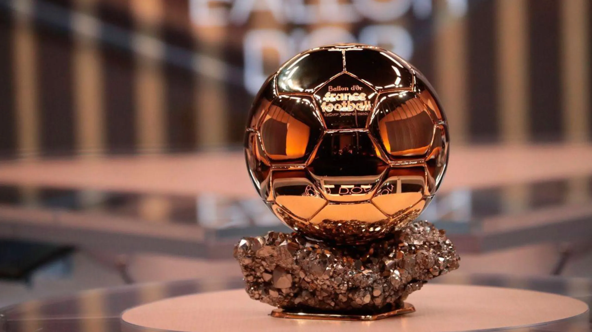

El Balon de oro de esta temporada!
La carrera por el Balón de Oro 2026 está más abierta que nunca. Varios futbolistas han brillado durante la temporada con actuaciones decisivas, títulos importantes y un gran impacto en sus equipos, convirtiéndose en fuertes candidatos al premio individual más prestigioso del fútbol.
Entre los nombres que más suenan destacan Kylian Mbappé, Lamine Yamal y Ousmane Dembélé, quienes han sido protagonistas tanto en sus clubes como en competiciones internacionales. Sus números, liderazgo y regularidad los mantienen en la conversación por el galardón.
La decisión final dependerá de los votos de periodistas de todo el mundo, quienes evaluarán el rendimiento individual, los títulos obtenidos y la influencia de cada jugador en los momentos más importantes de la temporada. El ganador será reconocido como el mejor futbolista del año.


 Brasil · FC Barcelona · 1997
Brasil · FC Barcelona · 1997

 Inglaterra · Blackpool FC · 1956
Inglaterra · Blackpool FC · 1956